WSN 拓扑控制
拓扑控制作为 WSN 的关键支撑技术，直接决定了网络的能耗效率、连通性、覆盖质量等核心性能，是延长网络生命周期的核心手段。
拓扑结构和拓扑控制
WSN 的拓扑结构由活动节点集合和直接通信的活动链路共同决定，用拓扑图G=(V,E)表示：
- V：网络中所有节点的集合（包括传感器节点、骨干节点、Sink 节点等）；
- E：边的集合，若两个节点v1和v2之间能直接通信，则(v1,v2)∈E。
拓扑控制的核心思路是：通过 “合理取舍” 节点和链路，构建优化的拓扑结构
从而解决节点密集部署、能量有限、资源受限，原始的密集拓扑会带来三大核心问题：媒体访问冲突，路由效率低下，能量浪费严重
拓扑控制没有明确的对应层次，部署于媒体访问控制层（MAC）和网络层（ROUTING）之间：
- 从 MAC 层获取邻居节点消息，用于维护拓扑；
- 为网络层路由提供连通的网络结构，是路由协议的基础。
拓扑控制的核心目标是：
- 首要目标：延长网络生命周期（WSN 节点能量不可更换，这是最核心的诉求）；
- 约束条件：保证一定的 “连通质量”（节点间能通过多跳或直接通信可达）和 “覆盖质量”（监测区域无盲区）；
- 兼顾性能：降低通信干扰、减少网络延迟、实现负载均衡、简化算法复杂度、保证可扩展性。
WSN拓扑结构
WSN（无线传感器网络）的拓扑结构是网络功能实现的基础框架，核心按 “节点功能分工” 和 “结构层次” 分为平面网络结构和层次网络结构两大类
总的来说，两类拓扑结构的本质区别的是节点是否有功能差异：
- 平面网络：所有节点 “身份平等、功能一致”，无主次之分；
层次网络：节点 “身份有别、功能分工”，分为核心节点和普通节点，形成上下层级。
平面网络结构（Flat Networks）
- 平面网络的核心是 “所有节点完全对等”，节点的地位对等，同时功能一致，协议相同
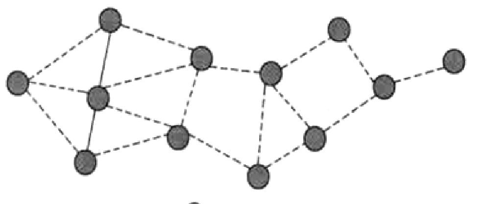
控制策略：功率控制
- 平面网络中所有节点功能一致，无法通过 “分工” 减少能耗，因此控制策略聚焦于 “优化链路”—— 通过功率控制调整邻居节点集合，即节点根据实际需求动态调整发射功率
- 优化拓扑结构让拓扑稀疏，通过降低功率，只保留与近距离、必要节点的通信链路
层次网络结构（Hierarchical Networks）
层次网络也称 “分级网络”，核心是 “节点功能差异化”，分为两大节点类型，形成 “上层骨干网 + 下层普通节点” 的层级：
- 骨干节点：成本高但是具有完整功能：路由转发、网络管理、数据汇聚（收集普通节点数据并处理）、簇间通信
- 一般传感器节点：仅数据采集（如温度、湿度监测），无路由、管理功能，同时相互不通信
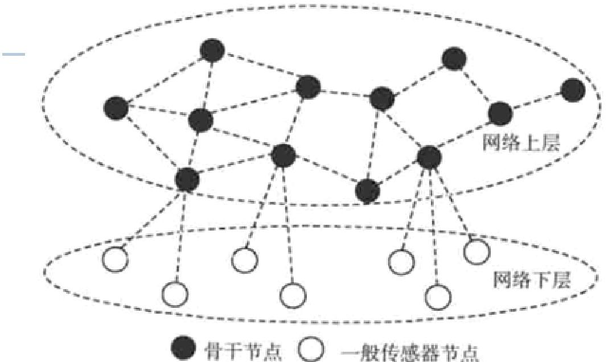
对于骨干节点构成的网络上层而言，各个节点之间是对等结构，类似平面网络
而普通节点之间不直接通信，所有数据都要通过骨干节点转发，构成网络下层。
两大控制形式：骨干网与分簇（Clustering）
- 骨干网（Backbone）：从所有节点中筛选出一部分 “控制节点”，形成 “控制集（Dominating Set）”，即骨干网；
- 簇状网（Clustering）：将网络划分为多个 “簇（Cluster）”，每个簇由 1 个 “簇头”（骨干节点）和多个 “簇内普通节点” 组成；
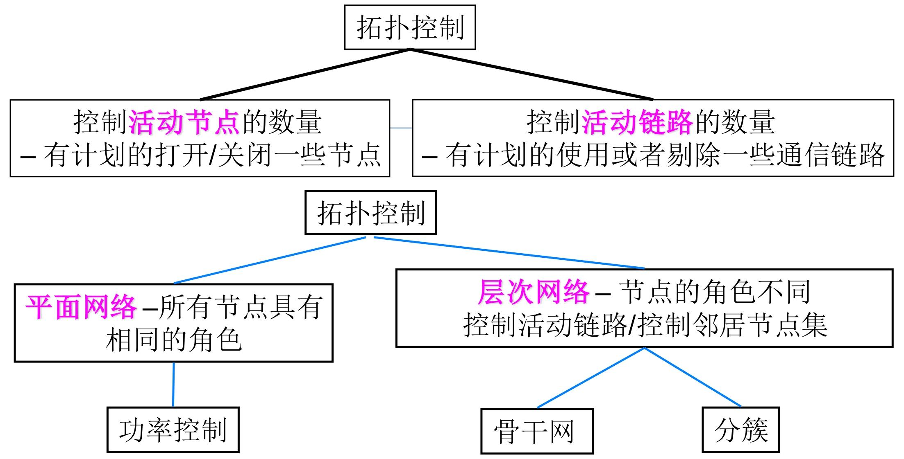
簇状网（Clustering）
簇状网（Clustering）是无线传感器网络（WSN）层次型拓扑结构的核心实现形式，核心逻辑是通过 “分簇分组” 实现节点功能分工，从而降低能耗、优化数据传输效率
簇状网的本质是把整个网络 “划分为多个独立小组（簇，Cluster）”，每个小组实行 “组长（簇头）+ 组员（普通节点）” 的管理模式
- 全员分簇：网络中所有节点都必须被划分到某个簇中，无 “无归属” 节点（保证网络全覆盖）；
- 簇头唯一：每个簇有且仅有一个 “簇头（Cluster Head）”，是簇内的核心节点（负责管理和数据处理）；
- 直接通信：簇内所有普通节点都必须是其簇头的 “直接邻居”—— 即普通节点与簇头之间能直接通信，无需其他节点转发（减少数据上传的延迟和能耗）；
- 归属唯一：每个普通节点仅属于一个簇（避免数据重复上传和管理混乱）；
- 例外：簇间桥梁节点（极少数节点，用于连接不同簇，实现簇间数据互通）可跨簇归属；
- 簇头独立：不同簇的簇头之间彼此独立，不直接通信（簇间数据需通过骨干网或桥梁节点转发，避免簇头负载过重）；
- 簇头构成控制集：所有簇头组成的集合（簇头集合 C）是网络的 “控制集”—— 意味着每个普通节点都被至少一个簇头覆盖（能直接通信），且簇头能控制簇内节点的通信行为。
WSN拓扑控制
拓扑控制算法的评价准则，是判断算法 “好不好用”“适不适合实际场景” 的核心标准
连通性（Connectivity）
- 连通性是拓扑控制的最基础要求，指算法优化后的拓扑结构中，任意两个活动节点之间都能通过直接或多跳链路实现通信（即网络没有被 “分割” 成孤立的区域）。
- 这保证了网络的“连通性寿命”，即WSN 网络生存期
扩展因子（Stretch Factor）
衡量剔除连接对于任意节点之间路径的影响
跳扩展因子（Hop Stretch Factor）
衡量 “路径跳数的增长比例”，公式为：
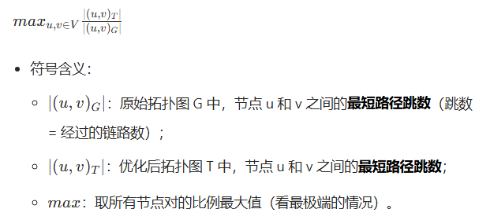
能量扩展因子（Energy Stretch Factor）
衡量 “路径能耗的增长比例”，公式为：
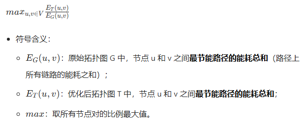
必须避免 “为了简化而简化”—— 不能为了减少链路 / 节点，而让节点间的通信路径变得 “又长又费电”，要在 “简化拓扑” 和 “路径质量” 之间找平衡。
吞吐量（Throughput）
- 吞吐量指优化后的拓扑结构单位时间内能够传输的数据总量，要求与原始网络的吞吐量相近
鲁棒性（Robustness）
- 当网络拓扑发生变化时（如节点失效、链路中断、新节点加入），算法的调整开销最小，能快速恢复网络功能。
算法总开销（Algorithm Overhead）
- 算法总开销指算法运行过程中消耗的资源成本小，比如计算量和通信控制信息的开销
平面网络拓扑控制：功率控制
平面网络中，所有节点功能对等、无主次之分，功率控制是其核心拓扑控制策略 —— 本质是 “动态调功率、保连通、省能耗”
功率控制（也称功率分配问题）的核心逻辑的是：
- 节点不始终用最大功率通信，而是根据实际需求动态调整发射功率；
- 在保证网络所有节点连通的前提下，让整个网络的能耗最小，从而延长网络生存时间；
节点调整发射功率的依据是 “距离与接收功率的关系”：
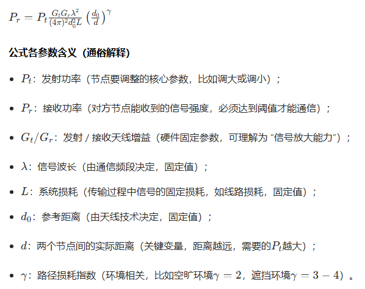
集中式功率控制算法
最基础的功率控制算法，核心是 “用最小的总功率让网络连通”，适合节点数量少、距离已知的场景。
算法前提：通信代价已知，独立设置通信功率
贪婪算法：“从小到大连分支，直到全网连通”：其实类似于并查集，同时在合并时确定两个节点的通信距离
分为两个阶段：构建连通网络、优化节点功率
- 构建连通网络
初始状态：所有节点发射功率为 0，每个节点是一个独立的连通分支（比如 3 个节点 A、B、C，初始分支是 {A}、{B}、{C}）；
步骤 1：将所有节点对按距离从小到大排序；
步骤 2：依次处理排序后的节点对，若两个节点属于不同连通分支，则将它们的发射功率设为两点间距离（保证能直接通信），并合并两个分支；
步骤 3：重复步骤 2，直到所有节点合并为一个连通分支（网络连通）；同时各个节点的功率取其中最大值
步骤 4（优化）：在保证连通的前提下，进一步降低单个节点的功率，即第二个阶段：优化节点功率
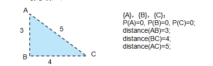
优化节点功率
在保证网络 k - 连通（课件中 k=1，即普通连通）的前提下，降低单个节点的功率，核心是 “剔除冗余功率”。
收集每个节点的关联链路：对每个节点 u，收集所有包含 u 的节点对（即 u 的邻居链路），并按距离从大到小排序（优先处理远距离链路）。
二分法降低功率：对每个节点 u，尝试降低其功率（从当前值开始），若降低后网络仍连通，则保留新功率；否则停止。
移除冗余链路：优化后，节点 A 和 B 的功率仅为 1，无法维持 (A,B) 链路（距离 2），因此移除 A-B 链路，网络仍通过 C-D 保持连通。
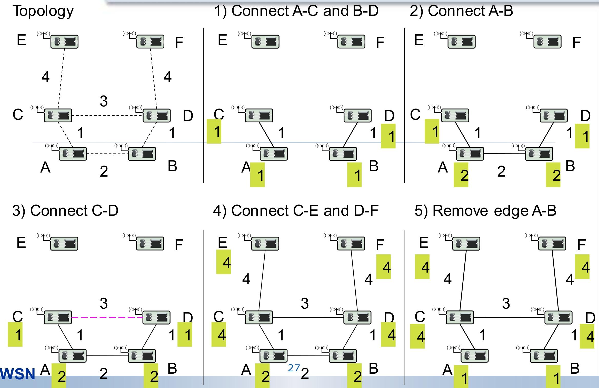
局部最小生成树算法（LMST）
“用局部信息构造最小生成树，以最小功率维持连通”
前提：所有节点已知自身的ID和地理位置信息
目标：连通且能耗小，双向链路，依赖一跳邻居，低节点度
LMST 分为信息采集、拓扑构造、确定发射功率三个步骤，完全由节点独立执行（分布式）：
信息采集（Information Exchange）
- 每个节点以最大发射功率周期性广播
Hello消息，消息包含自身的 ID 和位置信息； - 节点收集所有 “一跳邻居”（能收到其
Hello的节点）的信息，构造自己的本地拓扑视图（仅包含自身及一跳邻居的连接关系）。
- 每个节点以最大发射功率周期性广播
拓扑构造（Local MST Construction）
边权确定：以 “节点间欧氏距离的r次方（r≥2）” 作为边的权重（权重越大，代表通信功耗越高）；
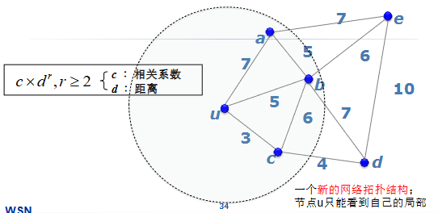
构造局部 MST：每个节点使用Prim 算法（最小生成树算法），在自己的本地拓扑视图中独立构造 “局部最小生成树”；
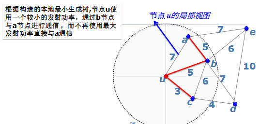
确定发射功率（Power Adjustment）
通过
Hello消息的接收信号功率，结合自由空间传播模型计算与邻居通信所需的最小发射功率节点将发射功率设置为 “维持局部 MST 连通所需的最小功率”，而非最大发射功率。
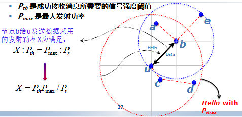
基于邻近图的 WSN 拓扑控制
从 “全连通图” 中按规则筛选必要链路，构建更稀疏但仍保持连通的拓扑
首先所有节点以最大功率发射时，形成的 “全连通拓扑图” 为 G=(V,E)：
- V：网络中所有节点的集合（顶点集）；
- E：所有节点间 “可直接通信” 的链路集合（边集），边 (u,v) 表示节点 u 和 v 能直接通信。
而邻近图从全连通图 G 中筛选出部分链路得到的子图 G0=(V,E0)，核心规则是：对任意节点 v∈V，给定 “邻居判别规则 q”，仅保留 E 中满足 q 的边 (u,v) 作为 E0 的元素。
经典的邻近图模型
- MST（最小生成树）
- RNG（相对邻域图）： u,v 之间的 “圆区域” 内无其他节点
- GG（加比图）：对边 (u,v)，若以 uv 为直径的圆内无其他节点，则保留 (u,v)。
- YG（Yao图）：将节点 v 的通信区域划分为 k 个等角扇区，每个扇区内仅保留距离 v 最近的节点对应的边。
基于节点度的 WSN 功率控制
节点度是指 “距离该节点一跳的邻居节点总数”（即能直接与该节点通信的相邻节点数量）。
控制的思想：给定节点度的上限和下限，节点通过周期性动态调整发射功率，使自身的邻居数落在该区间内：
- 邻居数＜下限：增大发射功率（扩大通信范围，增加邻居）；
- 邻居数＞上限：减小发射功率（缩小通信范围，减少邻居）；
- 邻居数在区间内：保持功率不变。
典型算法：本地平均算法 Local Mean Algorithm, LMA和本地邻居平均算法 Local Mean of Neighbors algorithm, LMN
- 本地平均算法LMA
适用于无全局位置信息、需动态维持连通性的平面网络
LMA 以 “固定周期” 重复执行以下步骤，每个周期内完成 “邻居统计 - 功率调整” 的闭环
| 步骤 | 操作细节 | 核心目的 |
|---|---|---|
| 1. 广播 LifeMsg | 所有节点以当前发射功率定期广播LifeMsg消息，消息仅包含自身 ID（无额外冗余信息，降低通信开销） |
让邻居节点感知自身存在，为后续邻居统计提供依据 |
| 2. 应答 LifeAckMsg | 若节点收到其他节点的LifeMsg，立即回复LifeAckMsg应答消息，消息中必须包含 “发送LifeMsg的节点 ID” |
告知发送方 “我已感知到你，你是我的邻居”，帮助发送方统计邻居数 |
| 3. 统计邻居数（NodeResp） | 节点在下一次广播LifeMsg前，汇总收到的所有LifeAckMsg，统计不同 ID 的数量，即为当前邻居数NodeResp（每个 ID 仅计数 1 次，避免重复统计） |
获得自身当前的节点度，作为功率调整的判断依据 |
| 4. 动态调整发射功率 | 根据NodeResp与预设 “邻居数上下限” 的关系调整功率：① NodeResp < 下限：增大发射功率（扩大通信范围，增加邻居，避免网络断连）；② NodeResp > 上限：减小发射功率（缩小通信范围，减少冗余邻居，降低干扰与能耗）；③ NodeResp在区间内：保持功率不变；④ 约束：调整后的功率不得超过硬件的 “最大发射功率上限” 和 “最小发射功率下限” |
使节点度稳定在合理区间，平衡连通性与能耗 |
对于 LMN而言
与 LMN 同属 “基于节点度的功率控制算法”，流程高度相似，核心差异仅在于邻居数（NodeResp）的计算策略
一是LifeAckMsg内容还包括自己的邻居节点数；二是NodeResp 计算方式为收集所有邻居的 “邻居数”，取平均值作为自身的NodeResp（即 “邻居的平均邻居数”）
LMA 的关键参数是 “邻居数上下限”，其设置可参考 F.Xue 和 P.R.Kumar 在 2004 年提出的 “网络连通性临界值”（即 “Magic Number”），该结论基于网络对称（节点通信半径相同、均匀部署）的前提：节点数为n
- 如果邻居节点数小于0.074 log n，则网络趋近非连通
- 如果邻居节点数大于5.1774 log n，则网络趋近连通
分簇式层次型网络的拓扑结构控制
LEACH（Low Energy Adaptive Clustering Hierarchy，低功耗自适应聚类层次算法）
通过动态分簇与簇头轮换，平衡节点能耗、延长网络寿命。
前提：所有传感器节点均可直接与 Sink 节点（数据汇聚中心）通信；节点密集部署；节点初始能量相同，且有限
为了延长整个网络的生命周期以及平衡各节点能耗，LEACH通过定期更换簇头节点，让所有节点公平承担高负载任务（簇头的数据汇聚、融合与转发），避免固定簇头快速耗尽能量。
LEACH 以 “周期” 为单位周期性执行，每个周期包含[1/p]轮（p为簇头百分比），每轮完成一次 “分簇 - 数据传输” 的闭环，且每个节点在一个周期内最多担任一次簇头，保证负载均衡。
- 簇建立阶段：动态选举簇头、形成簇结构、分配通信资源，为数据传输做准备；
- 数据通信阶段：簇内节点上传数据、簇头融合处理、转发至 Sink 节点，完成核心通信任务。
[!tip]
簇头选举（LEACH 核心）
关键参数：
- 簇头百分比p：预设的每轮簇头占总节点数的比例（如 5%~10%），决定簇的数量与规模；
- 选举周期：[1/p]轮，确保每个节点在一个周期内均有机会成为簇头；
- 当前轮数r：标识当前处于哪个选举轮次；
- 未当选节点集合Gr：当前轮次中从未担任过簇头的节点集合（保证轮任公平性）；
- 阈值T(n)：节点成为簇头的判定标准，仅节点随机生成的 0~1 之间的数小于T(n)时，可当选簇头。
其中阈值的计算：
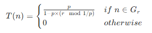
- 若节点
n属于未当选集合Gr：T(n)随轮次动态调整，轮次越靠后，未当选节点的T(n)越大，当选概率越高，保证公平性；- 若节点n已在本周期内当选过簇头：T(n)=0，无法再次当选，避免重复负载。
完整的流程：
- 簇建立阶段（分簇与资源分配）
- 簇头判定：每个节点根据自身是否属于Gr，计算阈值T(n)，随机生成 0~1 的数，小于阈值则确定为簇头；
- 簇头公告：簇头节点向周围邻居广播 “簇头公告消息”，告知自身身份；
- 簇加入：非簇头节点根据接收的公告消息信号强弱，选择信号最强的簇头加入，并向该簇头发送 “加入请求”；
- 时间片分配：簇头节点采用 TDMA（时分多址）方式，为簇内每个节点分配专属通信时间片，避免簇内数据传输冲突。
- 数据通信阶段（数据传输与融合）
- 簇内数据上传：簇内节点在各自分配的时间片内，将采集到的感知数据（如温度、湿度）发送给簇头；
- 数据融合：簇头接收所有簇内节点的数据后，进行融合处理（去除冗余信息、提取有效数据），减少传输数据量；
- 数据转发：簇头将融合后的结果一次性转发给 Sink 节点，完成本轮数据传输。
GAF 算法（Geographical Adaptive Fidelity）
GAF 是一种基于节点地理位置的 WSN 分簇拓扑控制算法，核心创新是 “虚拟单元格划分 + 节点休眠机制”，通过精准筛选活动节点（簇头），最大化降低网络能耗
前提：节点位置，检测区域位置，节点通信半径相同，网络密集
GAF 的核心是 “空间复用 + 休眠节能”，通过两步实现：
- 按地理位置划分 “虚拟单元格”：将整个监测区域分割为大小均匀的正方形单元格，确保相邻单元格内的节点可直接通信（避免簇间断连）；
- 单元格内动态选举簇头：每个单元格仅保留 1 个活动簇头节点，负责数据采集与转发，其余节点进入低功耗睡眠状态；
- 周期性轮换：簇头定期更换，避免单个节点持续高负载，平衡能耗。
整个过程分为两步：划分虚拟单元格、选举簇头
虚拟单元格划分（确定分簇边界）
- 相邻单元格的对角节点距离最大，需保证该距离≤R，化简后得到边长约束：
r <= R / √5，确保任意两个相邻单元格内的节点能直接通信 - 节点信息广播：所有节点广播包含自身 ID 和位置（POS）的消息，让其他节点知晓其地理位置；
- 单元格归属：节点根据自身位置和单元格边界，确定自己所属的单元格
- 相邻单元格的对角节点距离最大，需保证该距离≤R，化简后得到边长约束：
簇头选举与状态管理（动态维护活动节点）
节点分为三种状态：初始态（启动后的发现态），活动态（工作），睡眠态（节能）
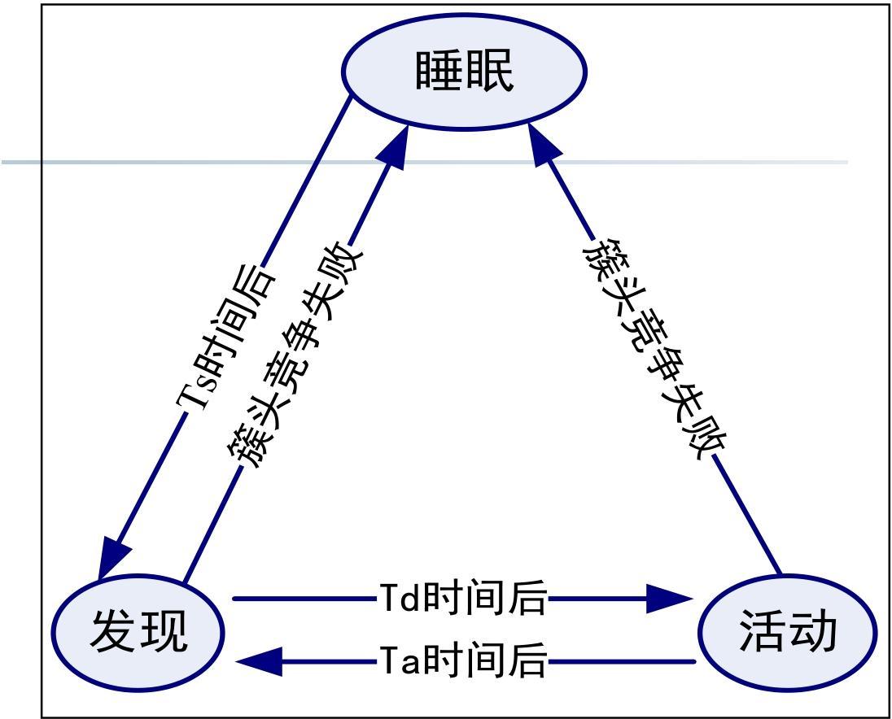
节点周期性唤醒：睡眠状态的节点按固定周期（如 Ta 时间）唤醒，进入 “发现态”；
单元格内信息交换：唤醒后的节点与同单元格内其他节点交换信息（如剩余能量、当前状态）；
簇头竞争：根据预设规则（如剩余能量最高、位置最接近单元格中心）选举簇头；
- 竞争成功则成为簇头进入活动态，反之进入睡眠态
GAF 算法的核心价值是 “用地理位置实现精准分簇，用休眠机制最大化节能”，适合节点密集、部署环境平坦、对能耗要求高的 WSN 场景（如农田环境监测、室内传感网络）。
其局限性主要集中在定位依赖和实际环境适应性，后续改进可结合链路质量检测（解决非直视问题）、动态调整单元格大小（适配节点密度）等策略
TopDisc 算法（拓扑发现算法）
从单个监视节点视角，以低通信负载构建整个网络的拓扑结构，适用于网络管理场景。结合 “分簇机制” 与 “高效应答策略”，在密集部署网络中快速完成拓扑发现，同时降低能量消耗。
TopDisc 算法的核心逻辑是 “请求发送 - 请求传播 - 应答反馈”，三步闭环完成拓扑构建
| 步骤 | 操作主体 | 核心动作 | 目标 |
|---|---|---|---|
| 1. 发送拓扑发现请求 | 监视节点（发起节点） | 向网络广播 “拓扑发现请求（TDR）” 消息，启动拓扑发现流程 | 触发全网拓扑信息采集 |
| 2. 传播请求 | 全网活动节点 | 收到 TDR 消息的节点，按规则转发该请求，确保所有活动节点均能接收 | 覆盖全网，不遗漏节点 |
| 3. 应答操作 | 全网活动节点 | 接收 TDR 的节点将自身拓扑信息（如邻居、状态）返回给监视节点，完成信息反馈 | 让监视节点收集完整拓扑数据 |
其中应答方式也有三种：直接应答（转发）、聚集应答（整合）和簇应答(簇头代表)
直接应答（适用于小规模网络）
- 每个节点直接向请求来源节点回复应答消息，中间节点负责转发。
聚集应答（适用于中等规模网络）
中间节点（如潜在簇头）侦听子节点的 TDR 传播，将子节点的应答信息与自身信息 “聚合” 后，统一反馈给上一级节点。
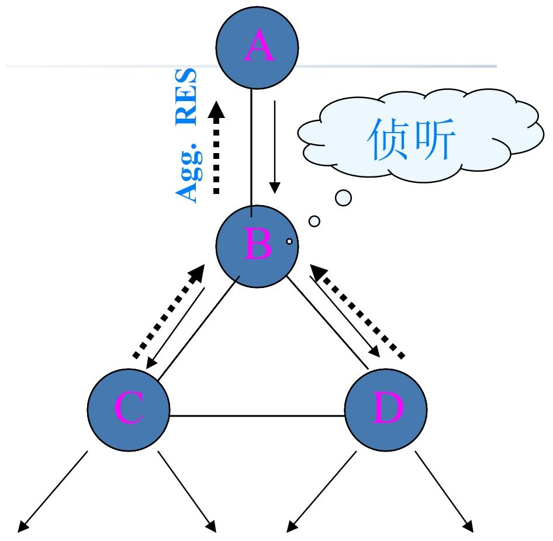
簇应答（适用于分簇网络）
仅簇头节点回复应答，簇内普通节点无需单独应答，由簇头代表簇反馈信息。
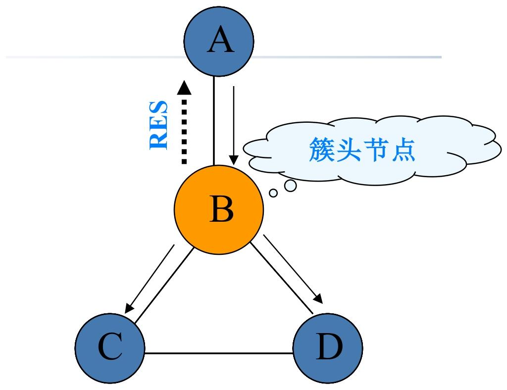
[!note]
构建簇的3色算法：TopDisc 通过 “3 色算法” 在请求传播过程中动态形成分簇，为聚集应答、簇应答提供基础，核心是通过 “着色” 区分节点角色（簇头 / 普通节点）
首先进行节点颜色（白黑灰）的定义：
- 白色：未收到 TDR 消息，未被发现的节点；
- 黑色：簇头节点（核心节点，负责聚合信息、转发消息）；
- 灰色：被簇头覆盖的普通节点（非簇头，仅转发消息、反馈自身信息给簇头）。
着色核心思想
- 转发延迟与距离成反比：节点收到 TDR 后，等待一段时间再转发，距离发送方越近，等待时间越长；反之则越短。
- 避免近距离节点重复成为簇头，保证簇头分布均匀。
具体过程：
- 初始节点（监视节点）标记为 “黑色”，广播 TDR 消息；
- 白色节点收到黑色节点的 TDR：直接标记为 “灰色”，等待一段时间后转发 TDR；
- 白色节点收到灰色节点的 TDR：先等待一段时间；
- 若等待期间收到黑色节点的 TDR：标记为 “灰色”，转发 TDR；
- 若等待超时未收到黑色节点的 TDR：标记为 “黑色”（成为新簇头），转发 TDR；
- 节点一旦标记为黑色或灰色，不再处理其他节点的 TDR 消息（避免重复着色）。
最后节点都有自己的邻居信息
- 灰色节点：知晓自身邻居信息、对应的簇头节点（邻居黑节点）、转发 TDR 给自己的簇头（父 - 黑色节点）；
- 黑色节点：知晓给自己转发 TDR 的灰色节点，可通过该节点转发数据或聚合信息。
响应聚合流程：
- 黑色节点（簇头）标记后，启动 “拓扑请求响应” 定时器；
- 定时器期间，簇头收集所有子节点（灰色节点）的响应信息；定时器超时后，簇头将子节点信息与自身邻居信息聚合，形成完整簇信息，发送给对应的父 - 黑色节点或监视节点；
- 其中定时器设置：距离监视节点越远的黑色节点，定时器值越小；反之则越大。
- 灰色节点仅转发簇头的聚合信息，不单独处理。
4 色分簇算法（新增暗灰）
更精准地控制簇头分布、避免簇头密集 / 覆盖盲区
简单来说，暗灰节点就是三色分簇算法中白色节点收到灰色节点的 TDR中等待过程的状态，根据等待期间的事件判断最后的颜色
暗灰 ：已被发现（收到 TDR），但未被黑色节点直接覆盖（与黑色节点 2 跳距离）的过渡节点，介于白色和灰色之间
其中暗灰的行为：广播 TDR、启动等待定时器，根据定时器结果转换状态（收到黑色TDR->灰色，超时->黑色）
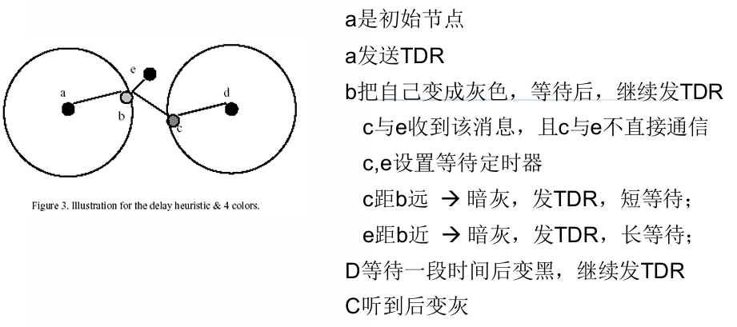